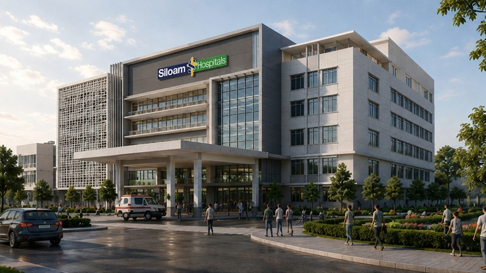
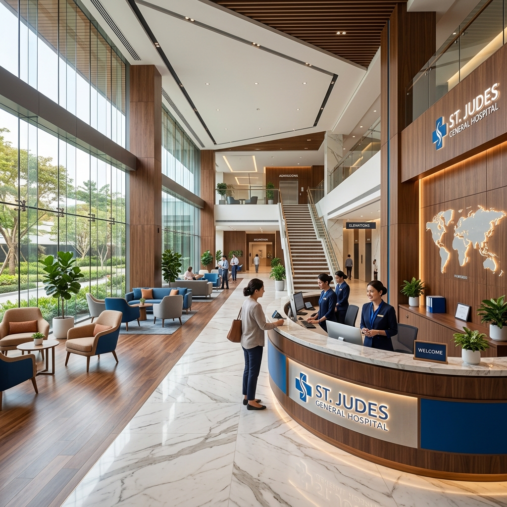

Ashodaya — Harapan Baru di Jantung Kota Yogyakarta
Filosofi Sebuah Nama
Berangkat dari bahasa Sansekerta, Ashodaya (आशोदय) adalah penyatuan harmonis dari Asha (Harapan) dan Udaya (Terbit/Fajar).
Nama ini tidak sekadar identitas, melainkan janji suci kami. Kami merancang rumah sakit ini untuk menjadi gerbang harapan—tempat di mana setiap pasien yang datang "meletakkan seluruh kesedihannya di belakang". Seperti fajar yang mengusir gelap, Ashodaya membawa pencerahan, optimisme, dan kesembuhan dengan standar keunggulan medis Siloam Hospitals.

Ashodaya hadir untuk memberikan pelayanan medis bertaraf internasional dengan sentuhan kehangatan humanis khas Yogyakarta. Fasilitas modern kami dirancang untuk mempercepat proses penyembuhan Anda.
Pelajari Lebih Lanjut